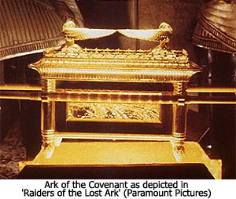
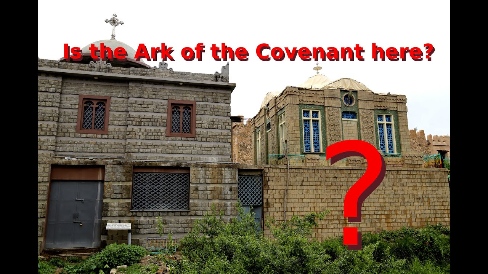
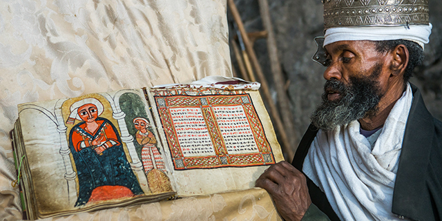
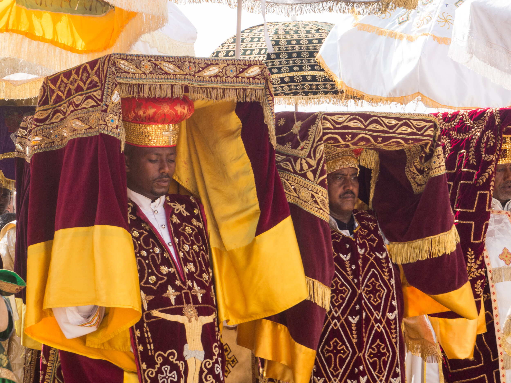

Things to know about Ethiopia
1. Ethiopia's national language is Amharic and has an interesting history.
The origins of the language can be traced back to the first millennium B.C. Rumors suggest that the language itself was associated with King Solomon and the Queen of Sheba, although it's long been debated. The language also has also evolved with time and traces of India's influence can regularly be found
Additionally, Amharic has more than 40 million first-language speakers and other millions of Ethiopian’s second-language speakers worldwide. It's the nationally recognized language of Ethiopia followed closely by English and Oromifa.
2. Ethiopia is the only African nation that was not colonized by European colonial forces.
It was briefly occupied by the Italians between 1936 and 1941.
3. Addis Ababa, the capital means "New Flower."
It was settled in 1886 and has a population of approximately 4 million. As one of the world's fastest-growing economies, it is a great destination for visitors from all over the world. The city itself offers everything from dancing, markets (the largest in Africa), art, amazing food and much more. Overall, there are wonderfully interesting facts about Ethiopia's capital city. Here are just a few more:
5. Ethiopia follows its own calendar system, most closely related to the Julian calendar.
Ethiopia's calendar is comprised of 12 months of thirty days each and a thirteenth month of five days (or six days in a leap year). A leap year is always recognized every four years without exception. The most notable difference in Ethiopia's time tracking, amazing, is that their calendar is seven years and eight months behind the Western (Gregorian) calendar. The main cause of this disparity is the way these cultures calculate the birth of Jesus. Effectively, Ethiopia is in the year 2012 while the rest of the world is reflecting on 2019.
Other notable differences:
- Christmas is celebrated on January 7.
- New Year is recognized on September 11th (in the Gregorian Calendar) during Ethiopia's spring.
6. Traditionally, parents and children do not share a last name.
Most children take their father's first name as their last name. Ethiopian's usually refer to one another using first name only
7. Ethiopia is the only African country with its own alphabet, letters, and numbers that traces its origin back to Sabean.
Also known as Ethiopic or Geez, the alphabet is one of the oldest in the world. It has a phonetic syllabary, meaning spelling errors are not common — unlike Latin based alphabets. The Ethiopian Alphabet consists of thirty-three letters and seven vowels.
8. Ethiopia claims to be the final resting place of The Ark Of The Covenant.
As a refresher, in Christian belief, the Bible notes that Moses inscribed the Ten Commandments onto stone slabs, which were then placed into a box made of acacia wood, aka the Ark. Ethiopian lore says that this box now resides in a church in Axum, Ethiopia's highland area. Jewish tradition says that the Ark was lost when the Babylonians sacked King Solomon's temple around 4th Century B.C. However, Ethiopian Christians claim that the Ark was taken to Ethiopia for safekeeping.
The church in Aksum is guarded by a single monk and outside visitors are not allowed inside. Whether or not people believe the Ark of the Covenant to be real, much less safely tucked inside a monastery in Ethiopia largely depends on religious beliefs. Regardless, the magic of tradition and the deeply seeded spirituality of Christianity is very much present in Aksum as well as the area surrounding it. It is truly a wonderful, mythical place to visit.
 9. Ethiopia is the second oldest Christian country in the world.
We've provided various tales and lore of Ethiopia's deeply held religious beliefs. Ethiopia has a long, detailed, fascinating history and that history is definitively connected to Biblical and religious traditions. Much of the customs in this country stem from Christianity and certain rural areas take divinity to be one of the sole reasons that the country continues to thrive and prosper. Only one area is said to be the oldest Christian country, even older than Ethiopia, and that is Armenia.
 10. The longest existing lava lake belongs to volcano located in Ethiopia, Erta Ale.
The volcano itself resides in Danakil Depression, a remote region that's one of the driest, lowest, hottest places on Earth. It is also one of the most active volcanoes in the world. Occasionally, due to pressure, "fountains of lava," will form and fly 6- to 13-feet high. The last known eruption of this volcano was recorded in 2005.

11. Ethiopia is the only country to use a 12-hour clock.
The clock is tracked from dusk to dawn, and dawn to dusk. An easier way to describe this, is they track time according to daylight. So, at 7 am when the sun rises, Ethiopia's time reads 1 o'clock. Similarly, noon would correspond with 6 o'clock, or 6 hours after the sun has risen. Foreigners are often confused about this big difference, but there are areas of Ethiopia that use a standard 24-hour clock, as well. In any of the case, it's only a matter of time before visitors grow accustomed to this daily tracking.
12. Ancient Ethiopian history claims that an Ethiopian goat herder, Kaldi, first discovered coffee.
Its magical benefits were founded around 850 AD. Legend holds that Kaldi first became aware of a magical berry that, when consumed by his goats, made them so energetic they did not want to sleep at night. Kaldi reported the findings to the local abbot of a nearby monastery who then made a drink with this crop. He found that it kept him awake longer through evening prayer.